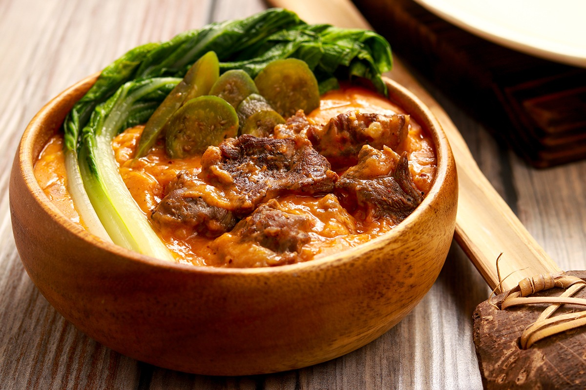
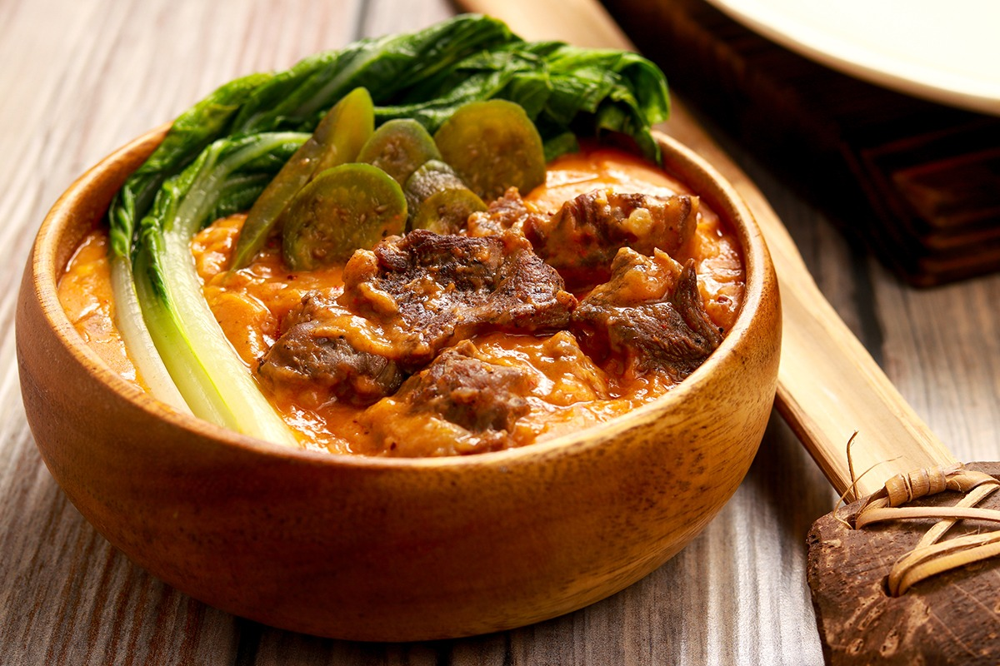

Food Hub

Discover the authentic flavors of the Philippines.
Experience the rich culinary heritage that brings family together. 

Food Hub PH is dedicated to celebrating the diverse flavors of Filipino cuisine. From classic favorites like Adobo and Sinigang to regional specialties, we bring authentic dishes straight to your table.
Our mission is to educate, inspire, and unite people through the joy of food. Every dish tells a story of culture, tradition, and family.
All our dishes are based on traditional Filipino recipes, carefully curated for true flavor.
Step-by-step cooking instructions make it easy for anyone to recreate Filipino classics at home.
From savory stews to sweet desserts, we showcase the wide variety of dishes from all regions of the Philippines.
Classic Filipino stew with tender meat marinated in soy sauce, vinegar, and garlic.
Hearty beef shank soup cooked until tender, served with corn and vegetables.
Rich peanut-based stew with oxtail, tripe, and fresh vegetables, served with bagoong.
Whether you’re a beginner or a seasoned cook, Food Hub PH provides you with authentic recipes that are simple to follow and delicious to enjoy.
Click the button below to browse our full collection of Filipino recipes and bring the taste of the Philippines to your kitchen.